Newton’s law of gravity remains the most useful description of gravity for rocket scientists unless high precision measurements are made. Yet Newton’s scalar law is inconsistent with special relativity so must be corrected. General relativity is the only way to fix this issue which is consistent with all weak and strong tests of gravity to date.Will [19] Yet no one has succeeded in 80 years to quantize this rank 2 field theory. Because the brightest minds on the planet have not succeeded for such a long time, it may be reasonable to suppose that the task cannot be done. If so, a starting point should be a field theory with infinite reach that has been quantized: the rank 1 field theory for electromagnetism, the Maxwell equations.
Classical electromagnetic theory has been remarkably robust to modern innovations. It was the inspiration for special relativity and did not need alteration unlike Newtonian mechanics. As quantum mechanics evolved, the Maxwell equations remained the same. Technical changes were required, such as the potential became an operator, and a gauge had to be chosen to determine the propagator. The advent of general relativity did not alter electromagnetism. Instead, the solutions to the equations of general relativity provide a metric needed by electromagnetism. The U(1) symmetry of electromagnetism served as the starting point for the formation of the standard model, which unifies electromagnetism, the weak, and the strong forces through the use of the gauge symmetries U(1), SU(2), and SU(3) respectively.
A rank 1 field theory for gravity is dismissed without proof in the literature.Gupta [7], Thirring [14] A current survey omits the formal possibility of a rank 1 field theory because no hypothesis consistent with current tests has been made (C. Will, personal communication). Any proposal modeled too closely on Maxwell would have like charges repel, a fatal starting point. Let us accept the unspoken consensus: a rank 1 field theory for gravity cannot be formulated with the tools at hand.
Steps forward in physics have often relied on math tools developed in the past that find new applications. Tensors have proved to be among the most useful tools available to write equations. Tensors can be added together, multiplied by a scalar, are true no matter what the choice of coordinates, and work in an arbitrary number of dimensions. It is this last property whose utility for more than 4 spacetime dimensions has yet to be confirmed by experiment. One could trade this property for another that demonstrably had more utility. For this paper, I will only use math tools that are defined in time and 3D space, for a total of four dimensions. Quaternions have the first three properties cited for tensors, but are restricted to work in four dimensions. For those who have not worked extensively with quaternions (and hypercomplex numbers), please see the first appendix, “Mathematical fields, quaternions and hypercomplex numbers”. Quaternions have the property not inherent in tensors of multiplying or dividing one quaternion by another. Given the central importance of multiplication in mathematics, this obvious choice to work on problems in spacetime hits roadblocks when applied to physics, causing people to work instead with complex-valued quaternions.? ] Only relatively recently has a way to represent the Lorentz group been found using real-valued quaternion triple products, but those results has not garnered much attention.De Leo [4]
This paper is based on variations on the Maxwell action, our best field theory. The scalar of the action is rewritten with quaternions. As with all rewrites, this produces no new physics. It does provide a means to connect to the standard model because the gauge symmetry SU(2) is also known as the unit quaternions. I show in the second appendix, “Standard model groups, tensors and quaternions” that quaternions will provide a means to switch between the three gauge symmetries found in the standard model.
Experiments tell us that the effects of gravity can be accurately described by a dynamic metric. A metric is symmetric, so changes in a dynamic metric are also symmetric. Quaternions will not suffice for the task due to the antisymmetric curl. The hypercomplex numbers on the other hand have a symmetric curl, so may be able to represent changes in a dynamic metric. The hypercomplex rules of multiplication are used to create a variation on the Maxwell action. The resulting action has like charges attract as happens for gravity. A metric solution is found which is consistent with weak field tests, yet different for higher order experimental tests. General relativity may have a new competitor, a symmetric variation of electromagnetism via an obscure algebra.
The classical action for electromagnetism has a contraction of an irreducible antisymmetric field strength tensor and a coupling of electric charge density with the 4-potential tensor. Tensors can be added together or multiplied by a scalar. Tensors form a group under addition with zero as the identity. Tensor expressions are valid no matter what the choice of coordinate systems. Tensors can be of arbitrary dimensions, but for this problem are constrained to four.
In this paper, tensors are upgraded to have the power to be multiplied or divided. Such a goal is constrained for finite algebras to 1, 2, or 4 dimensions over the real numbers. Quaternions are a mathematical field, meaning they are a group under the addition operator, and modulo division by zero, a group under multiplication. In four dimensions, quaternions behave like tensors in that they can be added together, be multiplied by a scalar and be written in an arbitrary choice of coordinate systems.
The standard way to write the Maxwell action has two Lorentz invariants: a current coupling term and the difference between the squares of the electric and magnetic fields:
|
| (1) |
Rewrite the fields in terms of the 4-potential. Varying this action with respect to the potential generates the two Maxwell source equations.
As a first step to using quaternions in expressions involving electromagnetism, have a quaternion differential operator act on a quaternion potential:
|
| (2) |
One gets a Lorentz covariant gauge term (g ≡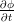 -∇A), and the electric and magnetic fields. The E and B fields will transform like parts of a second rank tensor since their definition is the same as the tensor definition. The gauge field will transform as the diagonal of the second rank tensor ∇μAν. It is a simple exercise to make this equation invariant under a gauge transformation by subtracting away the scalar, 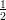(∇A - (∇A)*). The sign of the magnetic field can be flipped by reversing the order of the differential and the potential. The product of the differential and the potential written in both orders will generate the difference of two squares. Another riddle is how to ensure U(1) symmetry for the current coupling term. As usually taught, U(1) symmetry is the unit circle in the complex plane. Quaternions can be considered to be three complex numbers that share the same real value. A normalized quaternion represents a unit circle in the complex plane at some angle in space. Use these observations to construct the Maxwell action using real-valued quaternions:
|
| (3) |
The scalar that results from this quaternion product is identical to the one generated via tensors, so the physics is identical. It is interesting that a quaternion product as complicated as this one has a first term that is Lorentz invariant, but it must have the same properties as the Maxwell action. The rest of the quaternion product is the Poynting vector which provides a measure of the change in energy density in space caused by the electric and magnetic fields.
The gauge symmetry for the weak force is the non-Abelian group SU(2) also known as the unit quaternions. One way to represent the group is with the exponential of the 3-vector of a quaternion. Consider the following transformation of the electromagnetic action:
|
| (4) |
Both the current coupling and field strength density terms are guaranteed to have SU(2) symmetry. Where there is symmetry in the action, there are conserved currents. Since the Lie algebra su(2) has three generators, one could interpret the three conserved charges as the W+, W-, and Z needed for the weak force.
The electroweak force sounds like the product of the electromagnetic and weak symmetries. Yet the first is an Abelian group while the second is not. Quaternions are generally non-Abelian. They are Abelian if two quaternions happen to point in the same direction, which always happens when there is only one quaternion involved. The electroweak symmetry in an action can be achieved with the following transformation of the electromagnetic action:
|
| (5) |
The normed quaternion which represents U(1) symmetry commutes with the exponential representation of SU(2) because both point in the same direction. Together, their Lie algebras exhaust the four degrees of freedom found in one quaternion potential.
The strong force has a Lie algebra su(3) with eight generators, which sounds like a pair of electroweak symmetries. Yet by group theory, multiplying one electroweak symmetry by another will generate a third member of the same group. One needs a new multiplication table, which can be done using a conjugate operator in the following way:
|
| (6) |
This has a norm of one and depends on eight independent elements in the two quaternion potentials A and B. Requiring the conjugate operator for multiplication makes this operation non-associative because (ab)*c≠a*(bc), although the norms are equal. Considerable effort has been directed towards finding a group larger than the standard model to include the symmetries involved in all the forces of Nature, from the minimally supersymmetric SU(5) to SO(10), even the group E8.Lisi [8] Only photons and the weak field particles have been isolated. There is no reason why confinement must exist for the strong force, which has hidden from view isolated quarks. If the only way to have the symmetry of the strong force is to necessarily have two 4-potentials, such a constraint might justify what has been observed. Much more work will need to be done to see if a smaller model can pass the success already achieved by the standard model.
While less well-known, one can write another action using the electromagnetic fields, the Lorentz invariant dot product, 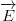 ⋅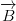. Varying this action with respect to potential generates the homogeneous Maxwell equations. Form this dot product using quaternions by taking the difference of both orderings of the differential and the potential (note: εijkl is the Levi-Civita symbol):
The only terms that survive the subtraction of squares are “maximally mixed” in the sense that each term has one potential and one differential from each of the four possible ones, no overlap (examples include 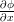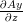 and 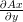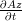). Each term has a partner with the sign flipped and the differentials swapped (so for the two examples, the matching pairs would be: -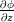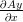 and -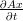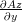. When put into the Euler-Lagrange equations, these pairs with opposite signs always cancel. The so-called vector identities can be spotted in the cancellations.
A dynamic metric is sufficient to explain weak field gravity experimental tests. A metric is a symmetric tensor, so changes in that symmetric tensor must also be symmetric. The curl found in quaternion derivatives is antisymmetric. It will not be possible to use quaternions to characterize gravity.
Use hypercomplex multiplication as described in the first appendix so one has a symmetric curl. Let the differential element act on the potential as before. In order to generate the same gauge term with hypercomplex multiplication, take the conjugate of the potential. The difference in multiplication will be indicated by using a box times (⊠) for hypercomplex multiplication between 4-vectors, and an otimes (⊗) for the all-positive symmetric cross product or curl:
|
| (8) |
This creates three fields: the gauge field, and two analogs to the electric and magnetic fields which I call the symmetric electric field e and the symmetric magnetic field b. Write an action with the same form as the Maxwell action:
|
| (9) |
This action is invariant under a gauge transformation for exactly the same reason as the Maxwell action written with quaternions: the gauge terms are subtracted away for the field strength density, and the potential is normalized. The only difference between this action and the one for Maxwell is the conjugate operator acting on the potential and the change in the rules of multiplication. The result in the action is that all the squared terms flip signs, all other terms are the same.
At first glance, one might think that such an action would result in like charges repelling. To address these concerns, reasons why like charges repel for electromagnetism will be compared with what happens for the hypercomplex action.
For the field strength density of electromagnetism, if the order of the differential operator is switched with the potential, then the signs of the E and B field change. That indicates an odd spin particle mediates the force. The simplest such particle is the spin 1 photon. Switching the order of the differential operator and the potential under hypercomplex multiplication changes nothing, indicating an even spin, force-mediating particle. The gauge symmetry rules out a spin 0 field, so a spin 2 particle is the simplest form for a mediating particle. Like charges attract for a spin 2 particle and could bend light.
The second reason like charges repel for electromagnetism concerns the spin found by analyzing the current coupling term, JA. Take the Fourier transform of the 4-potential and write it in the momentum representation as a current-current interaction, 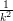JJ′. Consider the phase of the current-current term using quaternion and hypercomplex multiplication. For simplicity, focus on the first component and omit the constant:
|
| (10) |
|
| (11) |
Both current-current interactions have two parts: one underlined once that works like a Lie algebra, being the difference of two densities, the other underlined twice a Jordan algebra, being the sum of two densities. The quaternion multiplication term underlined once in eq. 10 should look familiar - it is angular momentum. Its projection operator has a spin of 1. There is no spin 0 state because the action is invariant under a gauge transformation. This term is the relativistic correction for motion along the J1 direction. The terms with spin 1 symmetry for the charge density along the J1 direction arise oddly enough from the hypercomplex product in eq. 11. Because the remaining terms add together constructively, their projection operator will have spin 2 symmetry. Like charges repel for forces mediated by spin 1 particles, and attract for spin 2.
The field equations that result from varying the action with respect to the potential are a third way to determine how like charges will respond to each other. In the static case for Gauss’s law, the electric charge density has a different sign from the Laplacian operator acting on the scalar potential, which means that like charges will repel. The field equations are generated for the hypercomplex action using the Euler-Lagrange equations:
|
| (12) |
|
| (13) |
Because the mass charge density has the same sign as the Laplacian, like charges attract for the hypercomplex Gauss’s law. The two new fields, the symmetric e and b fields, have the same differentials as their electromagnetic counterparts, just a few critical sign changes. There are no corresponding vector identity equations for the symmetric fields.
A flaw of Newton’s law of gravity is that it requires changes in the charge density to propagate instantaneously, which is not consistent with special relativity. One road to the Einstein field equations is to make Newton’s law respect special relativity.Weinberg [17] Because the hypercomplex field equations have time-dependent terms and are manifestly covariant, this motive for general relativity is eliminated. Gravity bends both time and space, while Newton’s scalar field theory can only effect time. Newton’s law correctly predicts the contribution of the g00 term. A 4-potential can easily enough account for the contributions from gRR, and thereby be consistent with experiment.
The hypercomplex field equations have a superficial similarity to the gravitoelectromagnetic field equations of general relativity.? ] The gravitoelectromagnetic equations are a linear approximation of the Einstein field equations. The gravitoelectromagnetic equations arise from a formal analogy to the Maxwell equations, one that may be too strict. The gravitomagnetic E and B field would change signs under a parity inversion. This implies the work of a spin 1 particle which would have like charges repel. The same is not true for the symmetric e and b fields. There are two gravitoelectromagnetic homogeneous equations which are not in this hypercomplex proposal.
Compare the Maxwell equations with the hypercomplex field equations in the Lorenz gauge. The Maxwell equations become a simple 4D wave equation, the second order time derivative minus the Laplacian with the 4-potential nicely separated.
The hypercomplex field equations in this gauge have all the same terms in the same locations:
For Gauss’s law, the sign of the Laplacian flips, as required so that like charges attract. The static Gaussian laws will have inverse distance solutions and thus inverse square force laws. The dynamic or fully relativistic potential solutions will have inverse distance squared solutions, and inverse cubed force laws, indicating they apply to dipoles.
The one term that remains the same is the gauge term since the same gauge was chosen. The same holds true for Ampere’s law: only the gauge terms are equal, all other signs are flipped. The two sets of field equations that share the same gauge are as different has they can be considering they have the same terms.
The goal for this section is to solve the simplest, physically relevant problems for the hypercomplex field equations. The solutions must be consistent with current tests of gravity, and different at higher resolution. Covariant derivatives are used throughout, so the field equations are more complicated than they appear. As is done in general relativity, work with a metric compatible, torsion-free connection, where a connection is a way to account for changes in the metric. A covariant derivative contains both the normal derivative and the connection. Applying two covariant derivatives creates the divergence of the connection which contains second derivatives of the metric. In principle, the hypercomplex field equations could provide a second-order differential equation that must be solved to determine a smoothly changing metric. Assume a static, spherically symmetric, and electrically neutral gravitational source, as is done for the Schwarzschild metric.
A gauge choice - how one measures things - for the hypercomplex action concerns how to measure a covariant derivative: how much should be due to the standard derivative versus how much is due to the connection, the changes in the metric? If one chooses to work with a flat Minkowski metric in Euclidean spacetime, the connection will be zero everywhere. The potential solution will be the typical charge divided by distance.
In the preceding paragraph, a choice was made that all effects of gravity were accounted for by the standard derivative of the potential. This time, choose to account for all of the change being due to the connection because the potential happens to be constant in time and space. Since many readers have not worked extensively with connections, I want to foreshadow the result: the solution will have a striking similarity to the familiar potential solution using charge over distance. Write the static field field equations:
Assume gravity is weak. Although there are two covariant derivatives, if gravity is weak then we do not need to account for the second-order curvature. To use the machinery of curvature, this section will require the use of tensors, indexes, and Christoffel symbols. Write out the covariant derivative:
The derivatives of the potentials are all zero given the assumptions, leaving only derivatives of Christoffel symbols:
Many textbooks point out that it is wrong to work with just a Christoffel symbol since a Christoffel does not transform like a tensor. This expression is valid only under the assumption of a constant potential function which happens to contribute nothing material to the derivative except to ensure the derivative transforms like a tensor.
Find a metric that solves these four equations. The metric must reduce to the Minkowski metric as the gravitational mass goes to zero. Test if the exponential metric below provides a solution with these properties:
|
| (24) |
There are 21 non-zero Christoffel symbols. The ones relevant to the field equations follow a simple pattern (n, m:1-3):
Notice the simple form: the Christoffel symbol equals the first derivative of a charge over distance. The reason this happens is that the Christoffel symbol has a contraction between three derivatives of a metric and the inverse of that metric. The derivative of the exponential metric will have the exponential times the first derivative of charge over distance. The exponential and its inverse politely cancel each other out, leaving only the first derivative of the charge over distance. For the symmetric Gauss’s law, one then takes derivatives of the Christoffels (Γ00i) which is precisely the same as the Laplacian of a charge over distance. This is remarkable since the machinery of the Christoffel symbol is much more complicated than the Laplace operator. The calculation for the symmetric Ampere’s law involves more terms. The reader is invited to confirm that they all cancel, which sounds reasonable for a static, spherically symmetric source.
The exponential metric is known in the literature as the Rosen metric.Rosen [13] The exponential metric is not a solution to the Einstein field equations, but has been studied in the literature because it is consistent with experimental tests of gravity to first order parametrized post-Newtonian (PPN) accuracy.Watt and Misner [16] At second order PPN accuracy, the exponential metric predicts 11.5μarcseconds bending of star light by the Sun, compared to 10.8μarcseconds from the Schwarzschild metric of general relativity, a difference of 0.7μarcseconds or about 6.5% more bending.Epstein and Shapiro [5] This level of precision is beyond our best measurements to date (approximately 100μarcseconds). An experiment such as LATOR, could confirm or reject this proposal on experimental grounds.Turyshev et al. [15]
The bimetric theory of Rosen is not consistent with strong field tests of gravity. The fixed background metric can store momentum, allowing for dipole modes of emission of gravity waves which are ruled out by observations of binary pulsars.Will [18] The hypercomplex action does not have an additional field to store momentum. For an isolated source, the lowest mode of emission that conserves momentum will be the quadrupole mode which is consistent with observation.
Imagine an approach to gravity that is half a potential theory, half a metric theory. Use the Newtonian scalar term in the potential, and a dynamic metric term for gRR. Whether such a proposal would be consistent with all experimental tests will have to wait for a more detailed analysis.
The two actions discussed so far, while similar in their structure, are independent of each other. A meaningless unification can be achieved by adding the two together. A subtle thread is needed to link the two. Both actions were made gauge invariant by subtracting their own field strength density conjugates. Omit that step, yet still make the action gauge invariant overall:
Both field strength densities generate an identical scalar term, the square of a gauge, (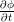 -∇⋅ A)2. The difference of the two actions makes a unified action that is invariant under a gauge transformation. Gauge symmetry is broken separately for the electromagnetic and gravity field strength densities, while being maintained for the unified GEM action. This is accomplished without the Higgs mechanism. The GEM proposal predicts the Higgs boson will not be found in particle field experiments such as the Large Hadron Collider (LHC).
The field equations are found by applying the Euler-Lagrange equation to the action:
This time the gauge symmetry is at the level of the field equations as well as the action. It is interesting that there can be no current density because the current density is lost in the subtraction. This makes sense since a charge could not both attract and repel a like charge.
A dimensionless 4-potential solution can be found:
The scalar potential solution with charge over distance is perhaps the best known in physics, often the first one taught when learning the subject. The three spatial derivatives magically cancel out with the second derivatives. For the 3-vector equation, the trick needs a slight modification due to the differences in sign between the time and space elements, but again three variables are needed for the solution.
The additive constant turns out to be more interesting than one might think. A large positive constant is required so the energy density of the field is positive whether like charges repel in electromagnetism, or like charges attract in gravity. This issue was understood by Maxwell and blocked his progress.Brown [2] The factor of n is required to normalize the 4-potential to one. If there is only a scalar potential field, n would equal 1. If all four terms were non-zero, n would equal 4.
Excluding the one derivative that is different between the Maxwell and hypercomplex field equations in the Lorenz gauge leads to a positive energy potential that solves both sets of field equations.
The deep insight into gravity provided by general relativity is that the geometry of spacetime is not presumed. In special relativity, the metric must be constant, the same for all inertial observers. In general relativity, the metric can vary depending on where the observer is in spacetime: being closer to a mass source will have more spacetime curvature. The Riemann curvature tensor is a rank 4 tensor that contains second order derivatives of the metric. The Hilbert action has the Ricci scalar, a contraction of the Ricci tensor which itself is a contraction of the Riemann curvature tensor. By varying the Hilbert action with respect to the metric tensor, the geometry of spacetime can change as dictated by the Einstein field equations.
Electromagnetism works no matter what the metric happens to be. The antisymmetric tensor cannot characterize how the symmetric metric tensor changes, so the possibly dynamic metric must be supplied as part of the background mathematical structure. By using hypercomplex multiplication for the GEM action, it becomes possible for the action to account for the changes in the metric tensor, and thus remove the metric from the background structure. The idea is not to treat the metric as an active field, but instead to use the diffeomorphism symmetry of the action to provide a constraint on a metric that varies in spacetime. One can choose how much of a covariant derivative is due to a dynamic potential or a dynamic metric. Where there is a symmetry, there is a conserved charge. Since the symmetry involves the metric, the charge must be mass. Energy and momentum also arise from symmetries in the action, the ability to vary the action in terms of time and location respectively. Since mass is the square of the energy minus the square of the momentum, it is logically consistent that energy, momentum, and mass all can be viewed as different symmetries of the same action.
There is a strong belief that field equations for gravity must be nonlinear. No linear theory consistent with weak and strong gravity field tests has been formulated, so the belief is well-founded.Will [19] For a nonlinear field, gravity fields would gravitate. The same is not true for electromagnetism: the electromagnetic field cannot be a source of charge. There are thought experiments to support the notion that gravity must be nonlinear. An example from a review paper on general relativity had two boxes with six neutral particles in each.Price [12] Imagine that the rest mass of one particle were to be converted entirely into the kinetic energy of the other five. Would the first box be able to tell any difference in energy density and spacetime curvature between the two? If the answer is no, gravity must be governed by a nonlinear field equation.
Repeat the thought experiment, but this time make all the particles positively charged. Now the thought experiment cannot be done because it would involve destroying an electric charge. There are solid theoretical and experimental tests demonstrating that electric charge cannot be destroyed.Okun [10] Because the thought is not consistent with electric charge conservation experiments, its conclusion is not supported. Gravity may be a linear field theory.
The Maxwell equations in the Lorenz gauge is a 4D wave equation that has been quantized.Bleuler [1], Gupta [6] Two spin 1 modes of emission must be made virtual to avoid a non-physical negative probability density. The gravity field equations proposed in this paper (eq. 14 and 15) have the same terms, with only one sign different. It may turn out that the virtual spin 1 field is actually a real spin 2 field for gravitons. The main difference would be the change from a spin 1 to a spin 2 propagator. More work will be required to see if this speculation is reasonable and well-behaved.
It is straight forward to calculate the Hamiltonian ((B + b)(B - b)) and stress-energy tensor from the unified GEM action. This author is reluctant to take the next steps for quantization. The use of two different rules of multiplication will present a challenge to establishing a mathematically rigorous quantum field theory.
The experimental tests of the equivalence principle indicate that gravity must be a metric theory.Misner et al. [9, chapter 40] This paper questions how to implement a metric theory. General relativity takes a direct approach: start with the Riemann curvature tensor that characterizes how a metric changes, and put its contraction the Ricci scalar into the action. This paper uses the symmetry found in the definition of a covariant derivative to allow spacetime geometry to change based on what mass is in that volume of spacetime. It is the flexibility of spacetime geometry that indicates the approach can be characterized as a metric theory.
There is a well-known thought experiment imagining a man in a closed box who would be unable to tell if he was in a smoothly accelerating rocket ship or the box was sitting on the surface of a planet (ignoring tidal effects). For the box on the planet, general relativity would be able to generate a metric equation that would, in a limit process, become Newton’s potential theory. For the GEM approach, one could choose a dynamic metric which would be equivalent to first order PPN accuracy to the metric from general relativity, or with the practical power of diffeomorphisms, choose to work in a flat spacetime and have a 4-potential completely characterize the gravitational field (see figure 1). A scalar potential like Newton’s law of gravity is inadequate because there is only one potential, so it gets the answer to light bending around the Sun half right. A 4-potential can describe the way measurements of both time and space are bent by a 4-momentum density.
The unified GEM action may strike some as being too simple to account for all four known forces. Yet the simplest components in Nature adhere strictly to the rules. Fundamental particles cannot be programmed to do things. Instead, the rules of accounting dictate what events are associated with what forces in spacetime. There is only one way to add 4-vectors together so everything ages in spacetime. With multiplication, there are more choices. Nature keeps multiple books so gravity, electromagnetism, the weak and strong forces, can all be done by the same simple particles simultaneously. The field strength density is the product of an operator and a 4-potential. In quantum field theory, an operator is an observable. The operator acting on the potential may have more freedom that many give it credit. Figuring out how to do 4D math correctly may yield more insights into how physics works at a fundamental level.
The GEM action is to a surprising degree what Einstein searched for over the last half of his life, with the added bonus of embracing the weak and strong forces.Pais [11] He tried an impressive range of ideas, from five dimensional Kaluza-Klein variations, to asymmetric Riemann curvature tensors, all to no avail. The radical approach used here is to abandon the Riemann curvature tensor, and work only with the building blocks of the curvature tensor, the connection, found in a covariant derivative. Efficient elegance governs the heavens.
Appendix A
Mathematical fields are equipped with four operations: addition, subtraction, multiplication, and division. The ubiquitous real and complex numbers are mathematical fields. Part of their utility arises from the careful study of calculus, called mathematical analysis, that requires a derivative to be defined over a mathematical field.? ] It is essential that every number have a multiplicative inverse, that division works for every number in the field, excluding zero.
The only other finite dimension, associative division algebra is known as the quaternions. Like many other things, Gauss discovered them first in one of his notebooks, but did not write an article on the subject. The four dimensional field was rediscovered independently by Hamilton and Rodrigues. Hamilton hoped, and his collaborators over-promised, that quaternions would do a great many things. It was Rodrigues who worked out the main use of quaternions today: to do 3D spatial rotations better than Euler angles.? ? ]
Quaternions can be defined with a real 4x4 matrix representation as follows:
|
| (A1) |
The tools of linear algebra can be used to invert this matrix. The inverse is the transpose of the matrix divided by the norm, the sum of the squares of the four elements. To avoid division by zero, the only quaternion which must be excluded has all terms equal to zero.
The complex numbers can be viewed as containing as a subgroup the real numbers, along with one imaginary number. Quaternions can be viewed as containing four subgroups: the real numbers and three complex numbers that share the same real number but have 3 independent imaginary numbers. The real number lies on the diagonal, while the imaginary numbers are the off-diagonal, antisymmetric elements of the matrix.
All the familiar words used in vector analysis were coined by Hamilton to describe parts generated through quaternion multiplication. The dot product, cross product, divergence, gradient, and curl should all be apparent:
The cross product and curl have the property that if the order of multiplication is changed, then the sign of the cross and curl flips. One important consequence is that quaternion multiplication will not commute unless the 3-vectors point in precisely the same direction, and thus are zero.
Notice that the scalar that results from squaring (dt,d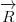) will be the Lorentz invariant interval, while the resulting 3-vector is Lorentz covariant (we know exactly how it changes). This is somewhat surprising in terms of group theory since quaternions are associated with rotations in 3 and 4 dimensions, SO(3) and SO(4) respectively, not the Lorentz group that conserves the interval, O(1, 3). What is needed to form the action are Lorentz invariant terms which can be generated using the first term of a quaternion product.
The differential operator acting on a 4-potential will transform like a rank 2 tensor because it contains precisely the same terms as the second rank asymmetric tensor ∇μAν. Notice that the gauge term from the quaternion differentiation, 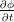 -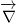⋅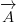, is not Lorentz invariant. The Lorentz invariant Lorenz gauge is formed from the contraction of ∇μA μ which would have a positive divergence of the 3-potential.
All the parts of quaternion products and calculus should be familiar to physicists, but not always all together with the relative signs. Quaternions remove an element of choice in vector analysis, which may be a good thing since Nature plays by a strict, consistent set of rules.
The way quaternions are usually defined is by writing out the properties of the basis vectors: i2 = j2 = k2 = -1, and ij = -ji = k. Given this definition, it is not clear how one would go about finding an inverse. A common error of omission is the real basis vector: 12 = 1. The real basis vector is every bit as important as the three imaginary ones, as is clear from the matrix representation.
The hypercomplex numbers have so far been used even less than the quaternions in modern physics.Davenport [3] In what I like to call the ”California representation” of hypercomplex numbers, everything is positive, no exceptions (there are other representations in use). Here are the rules for the basis vectors: i2 = j2 = k2 = 12 = 1, and ij = ji = k. It is easy to remember the signs since they are all positive. In vector notation, the boxsquare symbol (⊠) will represent hypercomplex multiplication of two 4-vectors. One key difference is that the symmetric cross product and symmetric curl 3-vectors have terms whose signs are always positive, symbolized with the otimes (⊗):
The dot product, divergence, and gradient are the same as seen in vector analysis. The relative signs that appear in quaternion products change to become all positive. The symmetric cross product and symmetric curl will not change signs if the order of multiplication is reversed, so hypercomplex multiplication always commutes.
The scalar that results from hypercomplex multiplication is not invariant under a Lorentz transformation. To be useful for actions in physics, it is a requirement that the scalar is invariant under a Lorentz transformation. In this paper, whenever a hypercomplex product is formed, a conjugate of one of the terms will be taken:
:
The two scalars are the Lorentz invariant interval and a covariant gauge.
A real 4x4 matrix representation of hypercomplex numbers is shown:
|
| (A5) |
This matrix is one way to represent the Klein 4-group, the smallest non-cyclic group which is not a division algebra. Calculate the inverse of this matrix.
The divisor of the inverse is the product of the four eigenvalues of the matrix representation.
| Eigenvalue | Eigenvector |
| t + x - y - z | {-1,-1, 1, 1} |
| t - x + y - z | {-1, 1,-1, 1} |
| t - x - y + z | {-1, 1, 1,-1} |
| t + x + y + z | {1, 1, 1, 1} |
The hypercomplex numbers modulo the eigenvalues that equal zero will necessarily have an inverse. That is a defining property of a division algebra. The real number field mods out these same sets of numbers because the sum is zero which does not have an inverse. The graph for the California representation of hypercomplex numbers is a non-directional version of the quaternion graph as shown in figure 2. Quaternions are accepted as a mathematical field. The change to a hypercomplex field is that directional edges labeled with imaginary numbers become non-directional. The self-loops indicate these are not simple graphs. What should be simple is to establish hypercomplex analysis since the definition of a derivative will be the same as for real and complex analysis. The self-loops are essential since much of calculus involves infinitesimal change, or no change at all, which can be achieved with the self-loops.
The hypercomplex numbers modulo eigenvalues equal to zero as a division algebra sidesteps Frobenius’s theorem that the only associative, finite dimensional division algebras over the real numbers are the real numbers, complex numbers, and the quaternions, up to an isomorphism. The Frobenius proof assumes that there are imaginary numbers with i2 = -1. Squares of imaginary numbers are all positive for the hypercomplex numbers, so the proof is not applicable.
Here is a big picture view of these two types of products for 4-vectors. Both share exactly the same identity element. If a force needs a vector product that is antisymmetric as electromagnetism does, then quaternions may be able to do the job. For a force that is universally attractive such as gravity, a vector product that is symmetric like that provided by hypercomplex numbers may be necessary.
Appendix B
The covariant derivative of the standard model in 4 dimensions is:
|
| (B1) |
where the g’s are coupling constants. The Y , τi, and λa are generators of U(1), SU(2), and SU(3) symmetry respectively. The 4-potentials Bμ, Wμi, and G μa are for electromagnetism, the weak force, and the strong force respectively. The last two have internal symmetries symbolized by the i which runs from 1-3 and a which goes from 1-8. The goal of this appendix is to unify these particular symmetries and potentials using quaternions.
The potentials are rank 1 tensors that can be added together or multiplied by a scalar. The members of the symmetry generators can be multiplied together to generate another member of the group. Each term in the covariant derivative has a component that can be added and multiplied. A mathematical field has both addition and multiplication operations defined. In 4 dimensions, the mathematical field is known as the quaternions, essentially 3 complex numbers that share the same real value. Tensors, groups, and quaternions all sound quite different, yet all three can be represented as 4x4 real matrices. Working with square matrices will illustrate an overlap of these otherwise separate tools.
Start with the simplest symmetry in the standard model, U(1), for electromagnetism. This group is often represented as a complex number with a norm of one, the unit circle in the complex plane. Write this as a real 4x4 matrix:
|
| (B2) |
This matrix has the properties of a rank 1 tensor that can be added to another or multiplied by a scalar. The matrix has the properties of the group U(1) since it behaves just like a complex number with the norm of 1. This matrix is a way to write a quaternion when two of the imaginary components happen to be zero.
The group SU(2) is known as the unit quaternions, quaternions whose norm is equal to 1. One way to generate this group is using the exponential of a quaternion where the scalar is equal to zero:
|
| (B3) |
This matrix is like Euler’s formula with the imaginary part split into three components. This will have a norm of one because eIe-I = e0 = 1, where I is the imaginary 3-vector. The Lie algebra su(2) has three independent elements which would be the b, c, and d.
The electroweak group U(1)xSU(2) can be viewed as the product of these two matrices:
|
| (B4) |
One can see the Lie algebra su(2) as before. The Lie algebra u(1) only has one degree of freedom. The three imaginary units are constrained to be those in su(2), leaving only one degree of freedom. While quaternions in general do not commute, two quaternions will commute if they point in exactly the same direction. Writing these two matrices in either order. The result is equivalent, as required for the Abelian group U(1). A quaternion with a norm of one that depends on 3 independent numbers has the symmetry of the weak force, while if it depends on 4 numbers, has electroweak symmetry.
The final symmetry to include is SU(3), a group of 8 unitary square matrices with a norm of 1. There are many ways to represent this group with none using a solitary quaternion since they have four degrees of freedom. Two quaternions would suffice, yet if two quaternions with a norm of 1 form a product, then they belong in the electroweak group just described. In order to make the multiplication table different, insist on taking the conjugate of one quaternion and multiplying it by a second quaternion, which will be called the Euclidean product. Quaternion multiplication preserves norms, so if both matrices have a norm of 1, the product has a norm of 1. The Euclidean product is not associative since (ab)*c≠a*(bc), although norms are preserved: |(ab)*c| = |a*(bc)|.
To see how this works in detail, write out the eight ways to form a Euclidean product with the basis vectors:
Each basis vector can be represented as a square matrix. All are unitary, having a norm of 1. The matrix representation of the Euclidean product of quaternion basis vectors fits the definition. This may be the simplest representation of SU(3) one could design.
Construct a potential with all of the symmetries of the standard model like so:
|
| (B6) |
The goal of uniting tensors with the symmetries of the standard model using quaternions has been achieved.
_______________________________________________
[1] K. Bleuler. Helv. Phys. Acta, 23:567, 1950.
[2] K. Brown. Why maxwell couldn’t explain gravity, 2000. URL http://www.mathpages.com/home/kmath613/kmath613.htm.
[3] C. M. Davenport. Clifford Algebras with Numeric and Symbolic Computations. Birkhauser, 1996.
[4] S. De Leo. Quaternions and special relativity. J. Math. Phys., 37(6):2955–2968, 1996.
[5] R. Epstein and I. I. Shapiro. Post-post-newtonian deflection of light by the sun. Phys. Rev. D, 22(12):2947–2949, 1980.
[6] S. N. Gupta. Theory of longitudinal photons in quantum electrodynamics. Proc. Phys. Soc., 63:681–691, 1950.
[7] S. N. Gupta. Einstein’s and other theories of gravitation. Rev. Mod. Phys., 29:337–350, 1957.
[8] A. G. Lisi. An exceptionally simple theory of everything. 2007.
[9] C. W. Misner, K. S. Thorne, and J. A. Wheeler. Gravitation. W. H. Freeman and Company, 1970. ISBN 0716703440.
[10] L. B. Okun. Tests of electric charge conservation and the pauli principle. Sov. Phys. Usp., 32:543–547, 1989.
[11] A. Pais. ’Subtle is the Lord...’: The science and the life of Albert Einstein. Clarendon Press, 1982.
[12] R. H. Price. General relativity primer. 50(3):300–367, 1982.
[13] N. Rosen. A bi-metric theory of gravitation. General Relativity Gravitation, 4(6):435–447, 1973.
[14] W. E. Thirring. An alternative approach to the theory of gravitation. Ann. Phys. (U. S. A.), 16:96–117, 1961.
[15] S. G. Turyshev, M. Shao, and K. L. Nordtvedt. Science, technology and mission design for the laser astrometric test of relativity, 2006. URL http://www.citebase.org/cgi-bin/citations?id=oai:arXiv.org:gr-qc/0601035.
[16] Keith Watt and Charles W. Misner. Relativistic scalar gravity: A laboratory for numerical relativity. 1999.
[17] S. Weinberg. Derivation of gauge invariance and the equivalence principle from lorentz invariance of the s-matrix. Phys. Let., (9):357–359, 1964.
[18] C. M. Will. Theory and experiment in gravitational physics: Revised edition. Cambridge University Press, 1993. ISBN 0521439736.
[19] C. M. Will. The confrontation between general relativity and experiment. Living Rev.s in Relativity, 9(3), 2006.
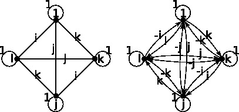
Figure 1: Hypercomplex and quaternion graphs respectively
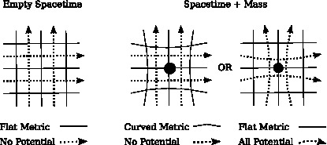
Figure 2: Curved metrics and/or 4-potentials for gravity


![- 1 ---------------t(t2 --x2 --y2 --z2)-+-2xyz----------------
h = ((t + x - y - z)(t - x + y - z)(t - x - y + z)(t + x + y + z), (A6 )
2 2 2
---------------x(--t-+--x --y---z-)-+-2tyz----------------,
(t + x - y - z)(t - x + y - z)(t - x - y + z)(t + x + y + z)
y(- t2 - x2 - +y - z2) + 2txz
----------------------------------------------------------,
(t + x - y - z)(t - x + y - z)(t - x - y + z)(t + x + y + z)
z(- t2 - x2 - y2 + z2) + 2txy
(t +-x---y---z)(t --x-+-y --z)(t --x---y-+-z)(t +-x +-y +-z)).](em-g-gem47x.png)